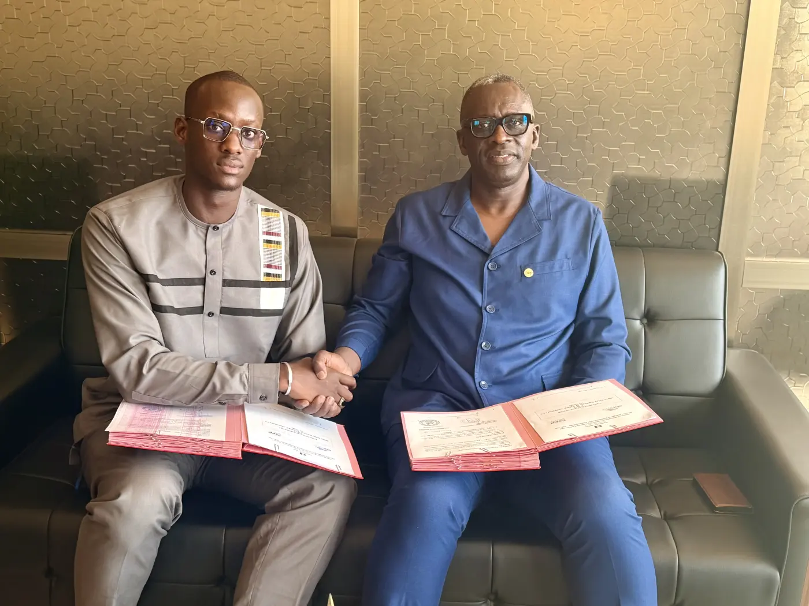

Centre de formation
ProSolar Academy
Centre de formation professionnelle en installation et maintenance de systèmes solaires, porté par Dieye Solar Group en partenariat avec l'ISEP Abdoulaye Ly de Thiès.
Pourquoi ProSolar Academy
Des techniciens formés sur le terrain, pas seulement en salle.
Le solaire se développe vite au Sénégal, mais beaucoup d'installations sont encore posées par des techniciens insuffisamment formés : systèmes mal dimensionnés, pannes à répétition, clients déçus.
ProSolar Academy transmet le savoir-faire acquis par Dieye Solar Group sur ses chantiers : dimensionnement, pose d'onduleurs hybrides, stockage, pompage solaire et maintenance. La formation est ouverte à tous ceux qui veulent un métier concret dans un secteur qui recrute.
- 70 %de pratique sur de vrais équipements
- 3 moisde formation, dont 1 mois de stage
- 20places maximum par cohorte
- 7 déc.début de la prochaine session
Programme
Quatre modules, du câble au business.
Une approche 70 % pratique et 30 % théorie : chaque notion est mise en œuvre sur de vrais équipements (panneaux, onduleurs hybrides, batteries lithium, régulateurs MPPT, pompes solaires).
- Module 1
Électricité appliquée
- Bases de l'électricité, courant continu et alternatif
- Tension, courant, puissance et énergie
- Protections électriques et mise à la terre
- Câblage, raccordement et lecture de schémas
- Mesures électriques et multimètre
- Module 2
Technologie des systèmes solaires
- Principe du photovoltaïque, panneaux et caractéristiques
- Régulateurs MPPT / PWM
- Batteries et systèmes de stockage
- Onduleurs off-grid et systèmes hybrides
- Installation, configuration et mise en service
- Module 3
Dimensionnement optimal
- Analyse des besoins énergétiques
- Champ photovoltaïque, batteries, onduleurs et protections
- Câbles et chutes de tension
- Systèmes de pompage solaire
- Études de cas et conception complète d'une installation
- Module 4
Incubation et entrepreneuriat
- Créer et structurer une activité solaire
- Élaborer une offre commerciale et un devis
- Gestion de projet et relation client
- Business model et présentation de projet
Pour qui ?
Une formation ouverte.
Techniciens en activité
qui veulent se spécialiser ou se perfectionner dans le solaire.
Électriciens
qui souhaitent élargir leurs compétences au photovoltaïque.
Étudiants et jeunes diplômés
des filières techniques, à la recherche d'une spécialisation concrète.
Entrepreneurs
qui veulent se lancer dans la vente ou l'installation de systèmes solaires.
Agriculteurs
pour gagner en autonomie sur le diagnostic et l'entretien de leurs pompes solaires.
Personnes en reconversion
qui cherchent un métier porteur et générateur de revenus.

Partenaire pédagogique
En partenariat avec l'ISEP Abdoulaye Ly de Thiès.
Dieye Solar Group et l'ISEP Abdoulaye Ly de Thiès ont signé une convention de partenariat pour la formation professionnelle aux énergies renouvelables. Le programme est construit en concertation avec l'institut.
À l'issue de la formation, chaque apprenant reçoit une attestation de compétences délivrée par ProSolar Academy – Dieye Solar Group, en partenariat avec l'ISEP.
Infos pratiques
Prochaine session : 7 décembre 2026.
Les places sont limitées pour garantir à chacun un accès aux équipements. Réservez la vôtre dès maintenant.
- Inscription
- Formulaire en ligne, puis paiement de 100 000 FCFA via Wave pour valider la place
- Durée
- 3 mois, dont 1 mois de stage pratique
- Rythme
- Cours intensifs le week-end, compatibles avec une activité professionnelle
- Pédagogie
- 70 % de pratique, 30 % de théorie, évaluation finale sur un projet réel
- Lieu
- Grand Standing, Thiès (près de l'École Sainte Bernadette)
- Effectif
- 20 apprenants maximum par cohorte
- Attestation
- Délivrée par ProSolar Academy – DSG, en partenariat avec l'ISEP de Thiès